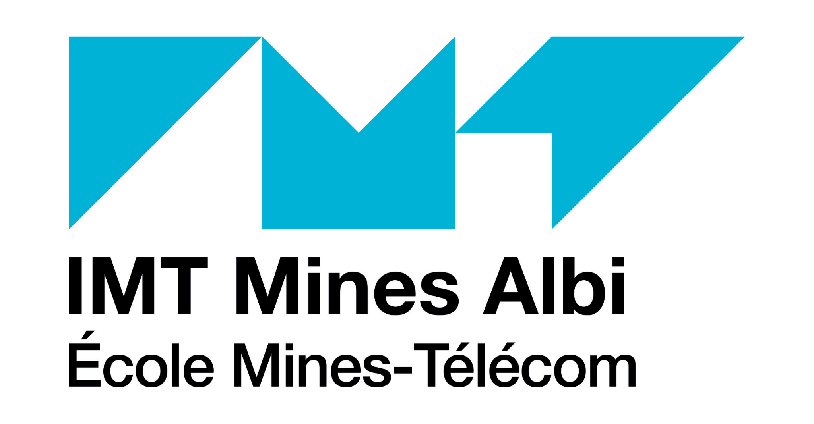
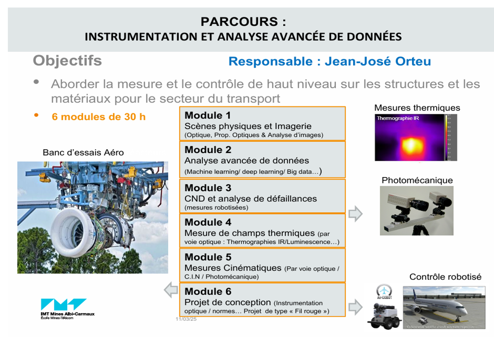

IMT Mines Albi.

Diplôme d’Ingénieur Généraliste · French engineering degree conferring the grade de master
A two-year engineering pathway at IMT Mines Albi through a double-degree arrangement with Universidad Tecnológica de Pereira, entering directly into the second year (2A).
Generalist foundations. Technical specialization.
The French engineering curriculum combines a multidisciplinary tronc commun (common core) with an engineering option (major field) and a parcours (focused technical pathway). My studies at IMT Mines Albi covered the second and third years of the standard three-year programme.
Continuum Mechanics
Mechanics of continuous media and engineering modelling.
Numerical Modelling & Optimization
Computational methods and optimization in engineering.
Finite Element Methods
Introduction to structural analysis using finite elements.
Materials & Processes
Material properties, processing and industrial applications.
Eco-design
Mechanical-component design with environmental considerations.
Advanced Materials & Mechanics
Nonlinear metallic behaviour, fatigue and anisotropic laminates.
Six modules. One technical pathway.
The final-year pathway comprises six 30-hour modules grouped into two teaching units (12 ECTS in the published programme). The official overview below describes their objectives and scope.

The pathway connects optical measurement, imaging, thermal and mechanical characterization, non-destructive testing, and data analysis. The instrumentation design project is presented separately in the Photoluminescence Thermometry case study ↗.
Academic mentorship.
Jean-José Orteu, Professor at IMT Mines Albi and researcher at Institut Clément Ader (CNRS UMR 5312), was my academic advisor during 2024–2026 and was responsible for the instrumentation pathway.
Original institutional documents for readers who want to explore the programme and specialization in more detail.
Institutional documents reproduced for educational reference; copyright remains with the respective rights holders. Official institution ↗